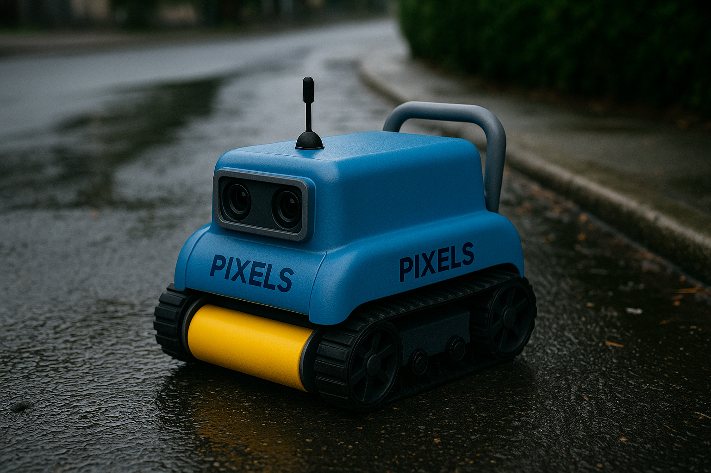

Tecnologias
A Guardian Forge utiliza robôs híbridos com sensores LiDAR, câmeras, sensores químicos e meteorológicos para monitorar rios e canais urbanos.
A Guardian Forge utiliza robôs híbridos com sensores LiDAR, câmeras, sensores químicos e meteorológicos para monitorar rios e canais urbanos.
Com análise preditiva, IoT e visão computacional, os dados são processados em tempo real, gerando alertas sobre riscos de enchente.